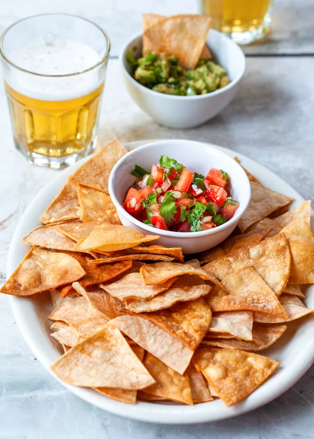

Fresh Tortilla Chips!

Description
There are few things better in life that fresh and hot tortilla chips to snack on along with your choice of salsa and beverage. Learn to make your own!
Ingredients
- Corn tortillas
- Corn oil (lets keep it thematic)
- Seasoning (your choice, salt is a classic)
Steps
- Pour enough oil in the pan to give about an inch and a half of height from its bottom
- Heat the oil until it bubbles when a bit of tortilla is added
- While the oil is heating, cut your corn tortillas to the desired shape
- Carefully place soft tortillas into hot oil, flipping them just before golden brown
- Remove fresh chips when they look ready (keep in mind they'll continue to cook a little out of the pot!)
- Season while the oil is still hot
- Save the oil to make chips tomorrow!